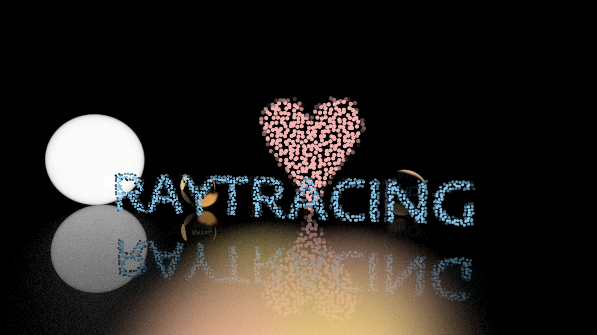

Yearly Project
By @raptazure - Haoran Liu
Source Code of the Slide
Choose Fileds
- Machine Learning
- Embedded Systems
- Web Applications
- Computer Graphics
- Operating Systems
- Distributed Systems
- Databases and Storage System
- Programming Language Theory
- ...
Machine Learning
- Video: Andrew Ng Machine Learning
- Frameworks: tensorflow, pytorch
Embedded Systems
- Raspberry Pi: https://www.raspberrypi.org/
- Linux and Open Source
- The Rust Programming Language
- Rust is blazingly fast and memory-efficient: with no runtime or garbage collector, it can power performance-critical services, run on embedded devices, and easily integrate with other languages.
- Rust’s rich type system and ownership model guarantee memory-safety and thread-safety — enabling you to eliminate many classes of bugs at compile-time.
- Rust has great documentation, a friendly compiler with useful error messages, and top-notch tooling — an integrated package manager and build tool, smart multi-editor support with auto-completion and type inspections, an auto-formatter, and more.
- The Embedded Rust Book | Chinese version
Web Applications
- Goals are important: what do people need?
- Front-end:
- HTML, CSS, JavaScript -> TypeScript
- Framework/Library: Vue, React, Angular
- Reactive, Functional: rxjs, elm, OCaml...
- Back-end:
- RESTful API design, MVC
- Frameworks: Node.js(express, nest), Java(Spring), Python(flask, django), Ruby(rails), elixir(phoenix)...
- Databases: MySQL, PostgreSQL, MongoDB...
- Container: Docker, Kubernetes...
- Mobile Apps:
- Native: Java(Kotlin) for Android, Objective-C(Swift) for IOS
- Hybrid: React Native, Flutter (go back to front-end)
- Desktop Apps: Cross-platform solution - QT, Electron...
Computer Graphics
- Rust implementation of “Ray Tracing in One Weekend”
- Games: Unity, UE4... 
Operating Systems
Distributed Storage System
Programming Language Theory
- SICP (MIT 6.001) and Computer Magic
- Functional programming: Haskell, Elixir, λ-calculus...
- Formal Proof: proof assistant -> Agda, Arend...
- Type Theory: HoTT, CuTT, Dependent type -> Agda, Idirs...
- Implement a lisp/scheme interpreter using Haskell...
- Write a C compiler using Rust -> ref: rcc
- Design your own programming language
Transition Styles
You can select from different transitions, like:
None -
Fade -
Slide -
Convex -
Concave -
Zoom
Themes
reveal.js comes with a few themes built in:
Black
(default) -
White
-
League
-
Sky
-
Beige
-
Simple
Serif
-
Blood
-
Night
-
Moon
-
Solarized
Slide Backgrounds
Set data-background="#dddddd" on a slide to change the background color. All CSS
color formats are supported.
Image Backgrounds
<section data-background="image.png">Tiled Backgrounds
<section data-background="image.png" data-background-repeat="repeat" data-background-size="100px">Video Backgrounds
<section data-background-video="video.mp4,video.webm">... and GIFs!
Background Transitions
Different background transitions are available via the backgroundTransition option. This one's called "zoom".
Reveal.configure({ backgroundTransition: 'zoom' })Background Transitions
You can override background transitions per-slide.
<section data-background-transition="zoom">Iframe Backgrounds
Since reveal.js runs on the web, you can easily embed other web content. Try interacting with the page in the background.
Marvelous List
- No order here
- Or here
- Or here
- Or here
Fantastic Ordered List
- One is smaller than...
- Two is smaller than...
- Three!
Tabular Tables
| Item | Value | Quantity |
|---|---|---|
| Apples | $1 | 7 |
| Lemonade | $2 | 18 |
| Bread | $3 | 2 |
Clever Quotes
These guys come in two forms, inline: The
nice thing about standards is that there are so many to choose from
and block:
“For years there has been a theory that millions of monkeys typing at random on millions of typewriters would reproduce the entire works of Shakespeare. The Internet has proven this theory to be untrue.”
Intergalactic Interconnections
You can link between slides internally, like this.
Speaker View
There's a speaker view. It includes a timer, preview of the upcoming slide as well as your speaker notes.
Press the S key to try it out.
Export to PDF
Presentations can be exported to PDF, here's an example:
Global State
Set data-state="something" on a slide and "something"
will be added as a class to the document element when the slide is open. This lets you
apply broader style changes, like switching the page background.
State Events
Additionally custom events can be triggered on a per slide basis by binding to the
data-state name.
Reveal.on( 'customevent', function() {
console.log( '"customevent" has fired' );
} );
Take a Moment
Press B or . on your keyboard to pause the presentation. This is helpful when you're on stage and want to take distracting slides off the screen.
Much more
- Right-to-left support
- Extensive JavaScript API
- Auto-progression
- Parallax backgrounds
- Custom keyboard bindings